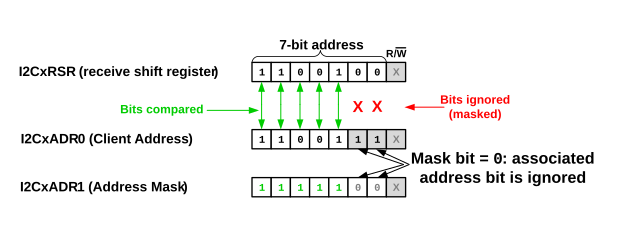

The I2CxADR0, I2CxADR1, I2CxADR2 and I2CxADR3 registers contain the client’s addresses. The first byte (7-bit mode) or first and second bytes (10-bit mode) following a Start or Restart condition are compared to the values stored in the I2CxADR registers (see Figure 37-11). If an address match occurs, the valid address is transferred to the I2CxADB0/I2CxADB1 registers or I2CxRXB register, depending on the Addressing mode and the state of the ABD bit.
| Mode | I2CxADR0 | I2CxADR1 | I2CxADR2 | I2CxADR3 |
| 7-bit | 7-bit address | 7-bit address | 7-bit address | 7-bit address |
| 7-bit w/ masking | 7-bit address | 7-bit mask for I2CxADR0 | 7-bit address | 7-bit mask for I2CxADR2 |
| 10-bit | Address low byte | Address high byte | Address low byte | Address high byte |
| 10-bit w/ masking | Address low byte | Address high byte | Address low byte mask | Address high byte mask |
0) or to the I2CxRXB
register (when ABD = 1), and the value of the R/W
bit is loaded into the Read Information (R) bit.In 7-bit Address with Masking mode, I2CxADR0 holds one client address and I2CxADR1 holds the mask value for I2CxADR0, while I2CxADR2 holds a second client address and I2CxADR3 holds the mask value for I2CxADR2. A zero bit in a mask register means that the associated bit in the address register is a ‘don’t care’, which means that the particular address bit is not used in the address comparison between the received address in the shift register and the address stored in either I2CxADR0 or I2CxADR2 (see Figure 37-11).

In 10-bit Address mode, I2CxADR0 and I2CxADR1, and
I2CxADR2
and I2CxADR3
are combined to create two 10-bit addresses. I2CxADR0 and I2CxADR2 hold the lower eight
bits of the address, while I2CxADR1 and I2CxADR3 hold the upper two bits of the address,
the R/W bit, and the five-digit ‘11110’ code
assigned to the five Most Significant bits of the high address byte.
11110’ code is specified by the I2C Specification, but
is not supported by Microchip. It is up to the user to ensure the correct bit values are
loaded into the address high byte. If a host device has included the five-digit code in
the address it intends to transmit, the client must also include those bits in client
address.0) or in I2CxRXB (when
ABD = 1), and the value of the R/W bit is
transferred into the R bit. The lower received address byte is compared to the values in I2CxADR0 and
I2CxADR2, and if a match occurs, the address is stored in either I2CxADB0 (when
ABD = 0) or in I2CxRXB (when ABD = 1).0) or in I2CxRXB (when
ABD = 1), and the value of the R/W bit is
transferred into the R bit. The lower received address byte is compared to the value in I2CxADR0,
and if a match occurs, the address is stored in either I2CxADB0 (when
ABD = 0) or in I2CxRXB (when ABD = 1).